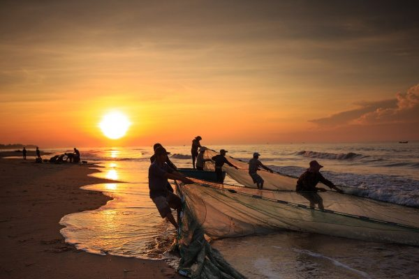
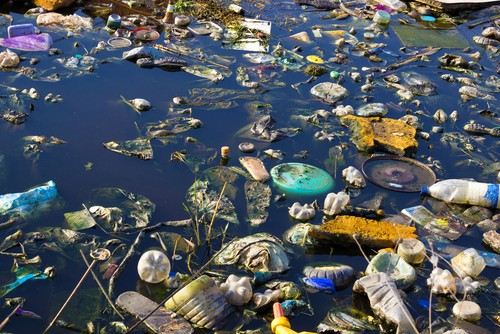

Os oceanos produzem pelo menos 50% do oxigênio do planeta, abrigam a maior parte da biodiversidade da Terra e fornecem a principal fonte de proteína para mais de um bilhão de pessoas. Eles também sustentam a economia global. Os serviços ecossistêmicos marinhos fornecem mais de 60% do valor econômico da biosfera global e 590 milhões de pessoas dependem da pesca marinha e da aquicultura para seu sustento

COMO PODEMOS EVITAR A POLUIÇÃO?
Cada cidadão é responsável pelos impactos, positivos ou negativos, de suas atitudes. Para não contaminar ainda mais as águas, é importante mudar algumas ações como:
-Não descarte o óleo de cozinha no ralo. Guarde o produto em uma garrafa e entregue para uma cooperativa para que possa ser transformado em sabão;
-Não utilize pesticidas ou herbicidas nas plantas;
-Jogue o lixo sempre em local adequado e amarre bem os sacos antes de pôr na lixeira;
-Não jogue nenhum tipo de material, como sacolinhas plásticas e embalagens, em rios, lagos e mares;
-Não descarte medicamentos ou outros materiais no vaso sanitário. Algumas farmácias fazem a coleta de remédios vencidos;
-Reduza o desperdício de água fechando as torneiras ao escovar os dentes, o chuveiro durante o banho, entre outras;
-Evite a erosão do solo promovendo a cobertura vegetal nos locais com essa tendência;
-Use menos produtos químicos para limpar a casa. Opte por produtos biodegradáveis.

A NATUREZA AGRADECE!!!